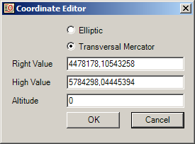
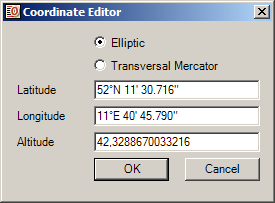

|
||||||

|
Die manuelle Eingabe von Koordinaten erfolgt über einen Editor, der die beiden gängigen
Darstellungssysteme unterstützt. Die Umrechnung erfolgt dabei automatisch, sobald
der Typ geändert wurde. Dies setzt natürlich einen gültigen Transformationsparameter-Satz
voraus. Leichte Abweichungen bei mehrmaligem Wechsel sind aufgrund der numerischen
Berechnung der Transformation nicht vermeidbar. Darstellung in der Mercator-Projektion  "Right Value" und "High Value" repräsentieren jeweils Rechts- und Hochwert und "Altitude" gibt die Höhe wieder. Darstellung in der Elliptischen Projektion  "Latitude" und "Longitude" repräsentieren jeweils Breiten- und Längengrad und "Altitude" gibt die Höhe wieder. Bei Breiten- und Längengrad wird eine spezielle Notation verlangt: ##°[E,N,W,S] ##' ##.###" Dabei repräsentieren [E,N,W,S] die (optionale) Angabe der Himmelrichtung. Das Zeichen # steht für eine Ziffer (die Anzahl der Stellen ist nicht vorgeschrieben). Optional können auch die Bogenminuten als Bruch angegeben werden. Die Angabe der Bogensekunden entfällt in diesem Fall. |